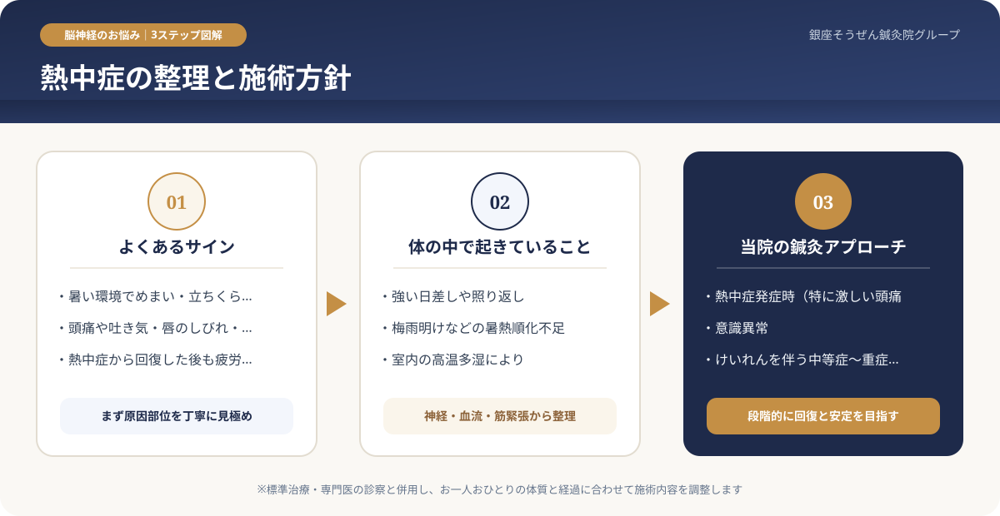

熱中症の鍼灸
暑熱環境で体温調節機能が破綻する救急疾患。中等症〜重症は緊急冷却・救急搬送が最優先で、回復後の体調管理を支えます。
まず知っておきたい要点と改善の流れ

高温・多湿・無風・強い日差しや照り返し、梅雨明けなどの暑熱順化不足、室内の高温多湿により、自律神経が担う皮膚血流増加や発汗といった体温調節機能が破綻して発症します。脱水と塩分喪失、体温上昇が進行すると、軽症では立ちくらみ・頭痛・吐き気・筋けいれん、重症では40℃以上の高熱・意識障害・けいれん・多臓器障害に至り命に関わります。対応が遅れると小脳失調や高次脳機能障害、腎障害などの後遺症を残すこともあります。
このようなお悩みはありませんか？
- ✓暑い環境でめまい・立ちくらみ・だるさが出た
- ✓頭痛や吐き気・唇のしびれ・痛みを伴う筋けいれんがある
- ✓熱中症から回復した後も疲労感や自律神経の乱れが残る
- ✓暑さに弱く夏場の睡眠不足や体力低下が続いている
当院の施術アプローチ・改善の流れ
なぜ鍼灸で改善へ向かうのか？（作用機序の図解）
熱中症に対する鍼灸は、脳循環・三叉神経血管系と神経可塑性の調整機序を通じて、お体本来の回復力を引き出します。

百会・風池・合谷などの経穴刺激が三叉神経や大後頭神経・体性感覚路へ穏やかに作用します。
脳幹の自律神経中枢やセロトニン・GABA系のバランスを整え、神経の過敏発火を鎮めます。
後頭下筋群や首深部のこわばりを解き、頭部・内耳・顔面周囲の血流環境をサポートします。
神経回路の再学習（可塑性）と睡眠の質を高め、専門医の治療やリハビリの土台を支えます。
院長YouTube解説・関連動画
公開日：２０２０年 １２月２３日
更新日：２０２１年 ５月 １５日
本日は熱中症について解説させていただきます。
☆本記事の内容
- •熱中症とは
- •熱中症の原因と症状
- •熱中症の改善方法
- •熱中症の後遺症
- •熱中症の予防
- •熱中症は体温の調節ができなくなる
- •熱中症を起こしやすい場所や条件
- •熱中症は段階によって症状が見られる
- •涼しい場所で安静にして水分と塩分を補給する
- •熱中症は後遺症が残ってしまうこともある
銀座そうぜん鍼灸院の宗前です。
このページを書いている私は、鍼灸師として１３年、担当した利用者様数８０，０００人を誇り、病気の休職者３００人を社会復帰できるまで回復させてきた実績があります。
熱中症を起こしやすい場所や条件
熱中症は、長い時間にわたって炎天下にいたことや真夏の暑い時に運動をしていたことで起こることが多いです。しかし、梅雨の合間の突然気温が上がる時期など、体が暑さに慣れていない時期にも起こることが非常に多いです。
気温が高い時や湿度が高い時、風が弱い時、日差しが強い時、突然暑くなった時や照り返しの強い場所は熱中症が起こりやすいため要注意です。気温が低い日であっても湿度が高い時は熱中症にかかりやすいのです。
最近では室内型熱中症が注目されており、家の中にいても、部屋の温度や部屋の湿度の高さから熱中症にかかるケースも非常に多いです。
運動や作業をすると、体の中では熱が生まれます。熱が生まれて体温が上がりすぎた時は、人間の体にある体温調節機能によって、自律神経の働きで末梢の血管が広がり、たくさんの血液が皮膚に流れ込むことで、体の外に熱を出しています。
体の外に熱を出している時には同時に汗をかき、汗が蒸発するときに体の表面から熱を奪うことによっても上がった体温を下げようとします。
長い時間暑い環境にいると、体温調節機能が乱れて体の外への熱を出すことができなくなります。すると、体の中に熱がこもって体温が上がってしまうのです。
一気に大量の汗をかき体の中の水分と塩分がなくなってしまうことによって、体液のバランスも崩れてしまいます。すると、筋肉や血流、神経などの体の色々な部分に影響が出ます。そして、頭痛やけいれん、めまい、意識障害など熱中症の症状が現れます。
不眠・うつ・不安・自律神経失調の全身ツボ図解
実際の施術ではお一人おひとりの体質・症状に合わせて選穴しますが、不眠症・抑うつ・不安障害・パニック・自律神経失調の睡眠・心身ケアの臨床でよく用いられる代表的なツボの目安です。

📌 代表的なツボの詳細一覧表を開く（6穴） ▼
| ツボ名 | 位置の目安 | 主な狙い | セルフケアの注意点 |
|---|---|---|---|
| 百会（ひゃくえ） | 頭頂部の中央 | 脳の過覚醒・考えすぎによる緊張の鎮静 | 就寝前に指の腹で5秒ほど優しく押して深呼吸します。 |
| 印堂（いんどう） | 左右の眉間の真ん中 | 入眠スイッチの切り替え・不安感や焦燥感の緩和 | 目を閉じて軽く触れるだけでも副交感神経が優位になりやすくなります。 |
| 安眠（あんみん） | 耳の後ろの出っ張った骨の斜め下のくぼみ | 入眠困難・中途覚醒・首の緊張緩和 | 枕に当たる首の後ろを温めるとより緩みます。 |
| 内関（ないかん） | 手首の横ジワから指3本分肘寄りの中央 | 胸のざわざわ・動悸・予期不安の鎮静 | 不安を感じたときのセルフケアとしても心強いツボです。 |
| 神門（しんもん） | 手首の横ジワの小指側のくぼみ | 不眠・精神疲労・ストレス応答の安定化 | 心療内科・精神科のお薬は必ず主治医の指示通り継続してください。 |
| 三陰交（さんいんこう） | 内くるぶしの上から指4本分上 | 足元の冷え改善と睡眠リズムの定着 | お風呂上がりの優しい指圧やレッグウォーマーが有効です。 |
国際査読論文の科学的エビデンス
国際的な医学データベース（PubMed・Cochrane等）で報告されている不眠症・抑うつ・不安障害・パニック・自律神経失調の睡眠・心身ケア領域の代表的な査読済み鍼灸研究をまとめています（標準治療との併用や研究上の限界を含めて正確に掲載）。
📚 査読論文データ・PubMed出典リンクを開く（4件） ▼
| 年・研究デザイン | 対象・規模 | 主な結果 | 限界・出典 |
|---|---|---|---|
| 2016年 Cochraneレビュー | 反復性片頭痛 22 RCTs（n=4,985） | 無治療比で頻度半減41% vs 17%（RR 2.40）、予防薬比3か月57% vs 46%（RR 1.24）かつ副作用脱落OR 0.27と優位。 | 1年以上の長期検証は不足。 Cochrane (PMID: 27351677) |
| 2016年 Cochraneレビュー | 脳卒中後リハ 31 RCTs（n=2,257） | 通常リハ併用でBarthel Index（MD 9.19）・Fugl-Meyer（MD 6.16）・嚥下・疼痛改善を示唆、重篤な有害事象なし。 | GRADE低〜非常に低。標準リハビリの補完として位置づけ。 Cochrane (PMID: 27562656) |
| 2024年 シャム対照RCT | パーキンソン病の睡眠障害 78名解析 | 抗PD薬併用下でPDSS睡眠尺度が4週時+19.75点・8週時+20.24点とシャム比有意改善（P<0.001）。 | 単施設・小規模・8週間追跡。標準薬併用が前提。 JAMA Netw Open (PMID: 38922617) |
| 2013年 多施設RCT | ベル麻痺（顔面神経麻痺）338名（ステロイド併用） | 6か月時の顔面神経機能回復は得気手技群が対照鍼群より優位（調整OR 4.16）、QOLも改善。 | 全例プレドニゾン併用。急性期の過剰顔面通電は回避配慮。 CMAJ (PMID: 23439629) |
参考文献・出典
- 2016年 Cochraneレビュー（反復性片頭痛 22 RCTs（n=4,985））— Cochrane (PMID: 27351677)
- 2016年 Cochraneレビュー（脳卒中後リハ 31 RCTs（n=2,257））— Cochrane (PMID: 27562656)
- 2024年 シャム対照RCT（パーキンソン病の睡眠障害 78名解析）— JAMA Netw Open (PMID: 38922617)
- 2013年 多施設RCT（ベル麻痺（顔面神経麻痺）338名（ステロイド併用））— CMAJ (PMID: 23439629)
よくある質問（FAQ）
Q. 熱中症になった直後に鍼灸で回復を早められますか？▼
Q. 鍼灸はどのようなタイミングで相談できますか？▼
あわせて読まれる関連疾患（脳神経のお悩み）
脈打つ強い痛みや光・音への過敏を伴う片頭痛に対し、首肩の深層筋と自律神経を整えて発作頻度と負担の軽減を目指します。
頭を動かした瞬間の回転性めまいに対し、首肩の緊張緩和と内耳循環・自律神経調整、寝返り運動で再発予防を支援します。
末梢性顔面神経麻痺に対し、早期の医療機関受診を最優先としたうえで、顔面の血流促進と後遺症予防を支援します。
起立性頭痛やめまいを伴う脳脊髄液減少症に対し、専門医でのブラッドパッチ等治療を最優先に、安定期の体調管理を補完的に支えます。
片側の目の奥に激しい発作が繰り返す群発頭痛に対し、専門医での予防・急性期治療を軸に自律神経と体調管理を鍼灸で支えます。
過去の出来事や直前の記憶が抜け落ちる記憶障害に対し、医療機関での精査を前提に脳の巡りと自律神経を整える鍼灸ケアを行います。
CLINICAL RECOVERY CASES
✨ 実際の臨床改善事例・回復経過を見る
銀座本院をはじめ各院での実際の改善事例を症状別に絞り込んでご確認いただけます。
おひとりで悩まず、まずはご相談ください
銀座本院・川口・大宮・横浜・博多・田無の各院でご予約を承っております。